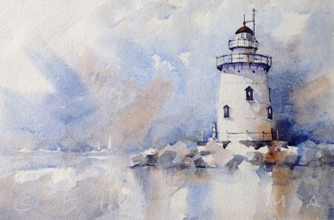

水彩简介
水彩画是用水调和透明颜料作画的一种绘画方法，简称水彩，由于色彩透明，一层颜色覆盖另一层可以产生特殊的效果，但调和颜色过多或覆盖过多会使色彩肮脏，水干燥的快，所以水彩画不适宜制作大幅作品，适合制作风景等清新明快的小幅画作。水彩颜料携带方便，也可作为速写搜集素材用。与其他绘画比较起来，水彩画相当注重表现技法。其画法通常分“干画法”和“湿画法”两种。
水彩画的范畴可以推展到古代埃及人的画卷，波斯人富有异国情调的细密画和欧洲中世纪圣经手抄本的插图，以及我国古代的传统洛阳东郊顾人残墓中布质画幔的遗迹，更早甚至可追溯到史前时代阿尔塔米拉和拉思考(Altamira & Lascauxl)的洞穴壁画。虽然许多古代人类用颜料、树脂调和水，作为记载他们的生活琐事，传述他们社会文明的工具，但是，随著时光的荏苒，知识的累积，历经18、19世纪欧洲水彩画的兴起；尤其是英国多位水彩画家们努力所创立的丰硕成就，从此，水彩画渐近完美。到19世纪末，水彩画已经发展出完整的独自体系。就狭义的定义而言，“水彩画”是指用水彩颜料，以水为稀释媒介，在纸张上作画的绘画方式。通常有透明水彩(Transparent Watercolor)及不透明水彩(Gouache)两大领域。在我国把水彩画画归类到西洋画的范畴，上个世纪初，开始进入中国，并在各艺术院校实施教授、普及。